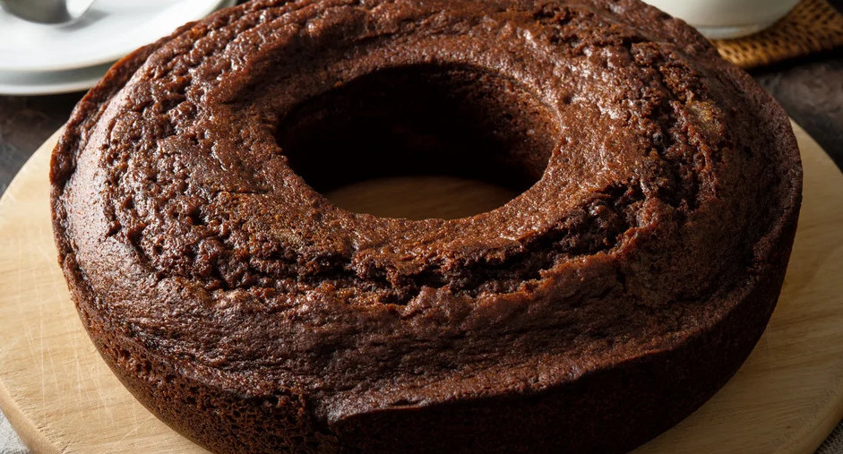

Vegan Chocolate Cake

Image source: Receita da Boa
With this vegan recipe, you won't miss dairy or eggs in your cake. It's a very tasty, fluffy and not-too-crumbly cake (after all, it's vegan!). The recipe
is pretty straightforward. Measure all the ingredients carefully, follow the steps, and you won't have any problems. Feel free to top the cake with sliced
oats or any frosting of your choice.
Ingredients
- 1 ½ cups of all-purpose flour
- ¼ cup of cocoa powder
- ⅓ cup of sugar
- 1 teaspoon of baking powder
- ½ a teaspoon of baking soda
- 250 ml of water
- 60 ml of oil
- 1 tablespoon of apple cider vinegar or lemon juice
Steps
You can mix all the dry ingredients in one bowl and all the liquid ingredients in another. Then, gradually add the dry to the liquid, always sifting.
If you want to avoid dirtying two bowls, you can mix everything in just one. In this case, follow these steps:
- In a large bowl, add the flour, cocoa powder and sugar one by one, sifting each as you add it.
- Add the baking soda and mix the ingredients with a whisk.
- Gradually add the water, mixing until you get a smooth batter.
- Add the oil, mixing it thorougly into the batter.
- Lastly, add the apple cider vinegar and mix well.
- Pour the batter into a greased and floured tube pan. Bake for 45 minutes.
- To check if the cake is ready, insert a fork into the center of the batter. If it comes out clean, the cake is done. If not, let it bake for a
few more minutes.
- Once baked, let it cool for 30 minutes before serving or adding frosting.
- Enjoy!
Recipe source: Carol Mussinha
Homepage